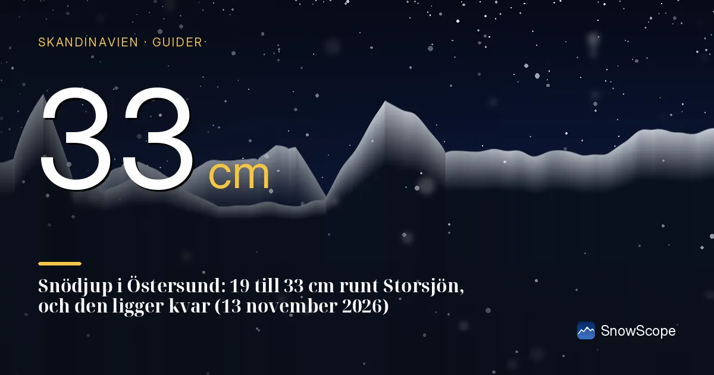

Snödjup i Östersund: 19 till 33 cm runt Storsjön, och den ligger kvar (13 november 2026)
Jämtland vaknade till vinter denna vecka. Omkring Storsjön registrerade väderstationer mellan 17 och 33 cm snö fredagsmorgonen—det mesta av det som föll sedan onsdagen när regionen fortfarande hade bar mark. Snön kom från två dygn av stadigt snöfall, och prognosen visar att det kommer att stanna.
Se snöprognosen för Östersund live i SnowScope-appenSnödjup, pudervarningar och 3D-kartan, gratis.
Där snön ligger djupast
Det djupaste täcket ligger i öster. Rissna, 38 km från Östersund, mätte 33 cm idag; det hade 10 cm igår och bar mark för fyra dagar sedan. Kaxås-Åflo i nordväst låg på 31 cm, med liten förändring mellan igår och idag, vilket tyder på att det fick de tyngsta snöfallen först.
På sjön själv steg Norderön från 8 cm till 19 cm, och Marby på södra stranden gick från 9 cm till 24 cm. Bort från huvudbassängen har den högre stationen vid Höglekardalen på 595 m bara 17 cm, och Mälgåsen söder om sjön visar också 17 cm.

Hur detta rankas mot 46 tidigare november
Snö ligger på marken vid Östersunds höjd den 13 november i 38 av de senaste 46 vintrarna, så idag är inte ovanligt. Det som är anmärkningsvärt är djupet. Medianvärdet över alla dessa år är 6 cm; tre av fyra vintrar hade mindre än 15 cm. Dagens 19 till 24 cm omkring sjön är ungefär vad området normalt ser omkring början på december, när det typiska täcket är 17 cm.
Vintern 2023–24 håller rekordet för detta datum: 56 cm. Förra vintern hade bara 2 cm den 13 november. I år hamnar behagligt mellan dessa extremer, vilket placerar Jämtland före sitt normala tempo för mitten av november men långt ifrån exceptionellt.
Vad helgen för med sig
Lördag och söndag kommer inte att ta bort snön. Båda dagarna är torra, med låga omkring -4 °C och höga omkring 0 °C. Täcket kommer att slå sig och härda när nätterna sjunker under noll.
Måndag för med sig ett litet tillskott: ungefär 3 till 4 cm nysnö prognostiseras, med temperaturer omkring 0 °C. Det vita lagret bör bli djupare snarare än mindre innan veckan blir mildare.
Vad man ska se upp för på marken
Snö föll på ofryst jord. Skogsvägar och stigar kommer att vara mjuka och djupa på vissa ställen, så alla som kör eller parkerar utanför huvudvägar bör röra sig försiktigt och kontrollera underlaget. Snötäcket döljer sumpig och spårig mark under.
Storsjön är långt ifrån att frysa till i mitten av november. Sjöns yta ser vit ut där snö ligger, men is är ingenstans nära tjock eller stark. Fotvandrare och skidåkare måste stanna på stranden; sjön är inte säker.
Den första riktiga säsongen
Detta är verklig vintérsnö, inte kallregn som smälter på eftermiddagen. Skogspromenader är helt plötsligt annorlunda; kälk- och sparkslädeåkningar på skogsstigar är nu möjliga. Efter en brun säsongstart har landskapet vänts på två dagar.
Tidpunkten är något sen. Många vintrar ser sitt första täcke i slutet av oktober, så denna ankomst i mitten av november visar en försenad start. Men djupet är inte onormalt för datumet, och prognosen tyder på att snön kommer att stanna och växa när december närmar sig.
Tips för skidåkare
- Om du planerar att åka skidor eller snöskor i skogen omkring Storsjön är snön den 13 november verklig men bara två dagar gammal. Stenar kan fortfarande vara nära ytan under tunna partier; gå och åk där andra redan har slagit väg.
- Sjöis: gå inte ut på Storsjön. Snö på is ser stabil ut, men isen själv är tunn. Stanna på stranden för nu.
- Skogsvägar och skogsstigar är mjuka. Om du kör in, gå långsamt och parkera på fast mark nära huvudvägen; tunga fordon kan sjunka och fastna.
- Räkna med att täcket slår sig och härdar under nästa vecka när temperaturer stannar under noll på natten. Nysnö på måndag kan för med sig ytterligare 3 till 4 cm, så förhållandena kommer att förbättras för vintéraktiviteter.
Om siffrorna
Snödjupen för skidorterna är det djupaste snötäcket på ortens övre backar på det angivna datumet; de är uppskattningar för ett område, inte en mätning på en punkt. Prognoser kan ändras. Läs alltid den officiella lavinprognosen innan du åker offpist.
Citera den här rapporten
För forskning, undervisning eller press: siffrorna och diagrammen får återanvändas fritt under CC BY 4.0 med den här källhänvisningen.
SnowScope (2026), Snödjup i Östersund: 19 till 33 cm runt Storsjön, och den ligger kvar (13 november 2026), https://snowscope.app/blog/sv/2026/11/ostersund-snow-depth-13-november-2026.html, hämtad 2026-11-13
SnowScope (Atlas Labs). (2026, November 13). Snödjup i Östersund: 19 till 33 cm runt Storsjön, och den ligger kvar (13 november 2026). SnowScope snow reports. https://snowscope.app/blog/sv/2026/11/ostersund-snow-depth-13-november-2026.html
BibTeX
@misc{snowscope2026ostersundsnowdepth13nove,
author = {{SnowScope (Atlas Labs)}},
title = {Snödjup i Östersund: 19 till 33 cm runt Storsjön, och den ligger kvar (13 november 2026)},
year = {2026},
month = nov,
howpublished = {\url{https://snowscope.app/blog/sv/2026/11/ostersund-snow-depth-13-november-2026.html}},
note = {Published 2026-11-13 20:49 UTC; accessed 2026-11-13}
}· CC BY 4.0 · Metoder, data och verktyg →
Följ Östersund
Gratis: ett meddelande när nysnö är på väg, och prognosen varje morgon.